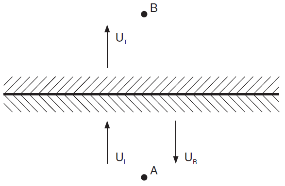
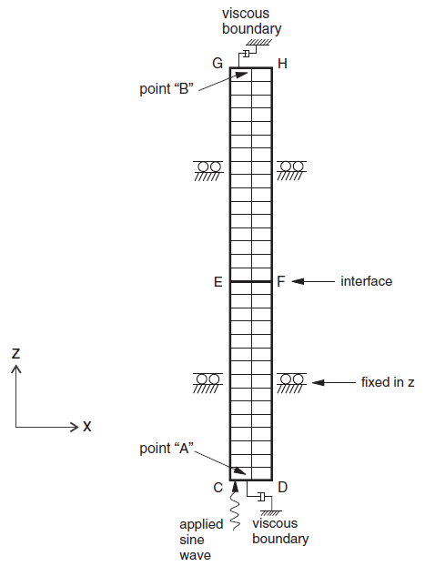
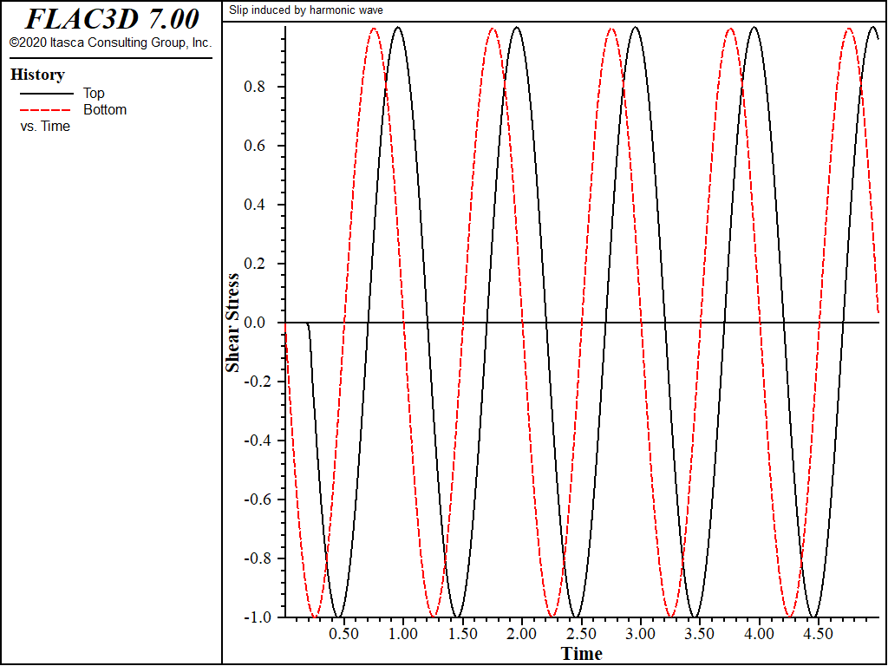
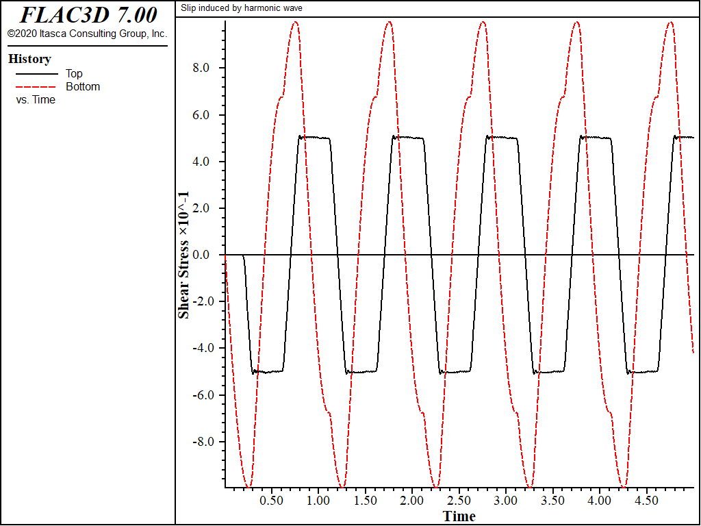
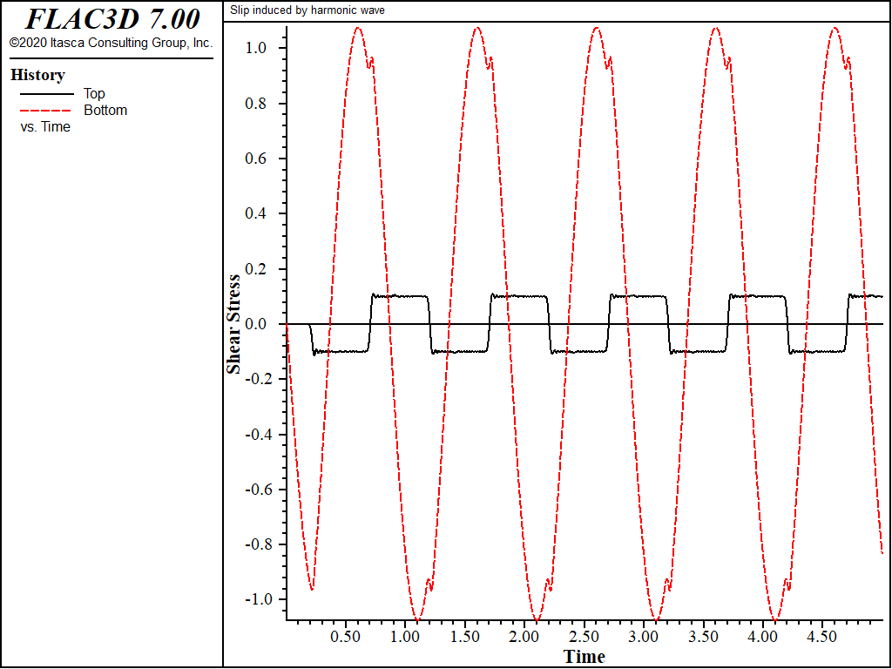
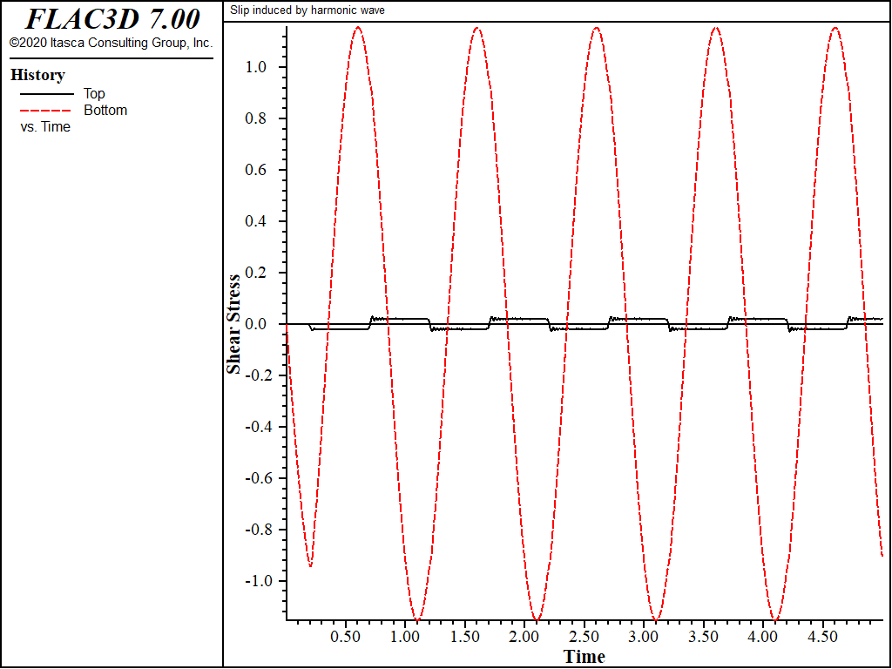
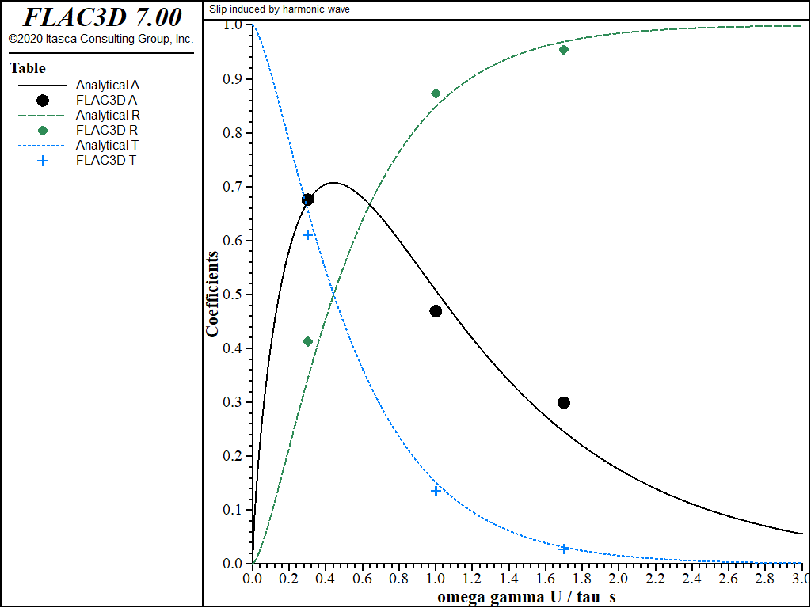

简谐剪切波引起的滑移
注意
本示例的项目文件可在 FLAC3D 中查看/运行。[1] 主数据文件见本示例末尾（main data files）。其余数据文件可在项目中找到。
该问题研究平面不连续面对入射剪切波传播的影响。两个均匀、各向同性的半无限弹性区域由具有一定抗剪强度的平面不连续面隔开，如 图 1（Figure 1） 所示。法向入射的平面简谐剪切波将 在不连续面处引起滑移，从而导致摩擦能量耗散。因此，能量 将在不连续面处发生反射、透射和吸收。用 FLAC3D 对该问题建模，并利用结果确定透射、反射 和吸收系数。这些系数与解析解（Miller 1978）给出的系数进行比较。


图 1：入射谐波在不连续面处的透射与反射。
Miller（1978）针对均匀材料情况给出的反射（\(R\)）、透射（\(T\)）和吸收（\(A\)） 系数为
其中 \(E_I\)、\(E_T\) 和 \(E_R\) 分别表示与入射波、透射波和反射波相关的每个振荡周期 单位面积能量通量。系数 \(A\) 是 不连续面处吸收能量的度量。能量通量 \(E_I\) 由下式给出
| 其中： | \(T\) | = | \((2 \pi)\thinspace /\thinspace \omega\) = 入射波的周期； |
| \(\sigma_s\) | = | 剪应力； | |
| \(v_s\) | = | \(x\) 方向的质点速度；以及 | |
| \(\omega\) | = | 入射波的频率（rad/sec）。 |
对于弹性介质，
因此，
其中 \(c\) 为传播剪切波的速度。
入射波的能量通量 \(E_I\) 在不连续面无滑移的情况下于点 A（见 图 1（Figure 1））处计算。透射波的 能量通量 \(E_T\) 在不连续面发生滑移的情况下于点 B 处计算。反射波的 能量通量 \(E_R\) 通过确定两种情况（滑移与无滑移）下速度之差 来计算。
图 2（Figure 2） 显示了数值模型，它由两个子网格 （每个子网格在 \(z\) 方向有十五个网格单元，在 \(x\) 方向有两个网格单元， 在 \(y\) 方向有一个网格单元）组成，两者由接触面 EF 连接，该接触面具有较高 刚度并模拟不连续面。所用条件如下。
边界条件
- 非反射黏性边界位于 GH 和 CD。
- 沿侧向边界 GC 和 DH 阻止竖向运动。
- 所有网格点在 \(y\) 方向固定（即强制采用平面应变条件）。
加载条件
- 沿 CD 施加与入射波相对应的剪应力。
- 入射波的最大应力为 1 MPa，频率为 1 Hz。
材料条件
弹性介质
\(\rho\) = 2.65 × 103 kg/m3
\(K\) = 16,667 MPa
\(G\) = 10,000 MPa
接触面
\(k_{x}\) = \(k_{s}\) = 10,000 MPa/m
\(C\) = 黏聚力 = 2.5 MPa（无滑移情况）；滑移情况为 0.5、0.1、0.02 MPa
请注意，数值模型中入射波的幅值必须加倍，以 考虑非反射边界的同时存在（见 动力输入的施加（Application of Dynamic Input））。


图 2：简谐剪切波引起滑移问题的几何形状和边界条件。
分别对界面黏聚力为 2.5、0.5、0.1 和 0.02 MPa 的四种情况进行了计算。模型顶部和底部（点 A 和 B）的 \(x\) 方向速度历史分别存于表 底部 x 向速度 N（xvelbotN） 和 顶部 x 向速度 N（xveltopN），其中 N 为工况编号 1 至 4。每种情况开始时，通过删除所有网格单元和历史、并将总动力时间重置为 0 来重置前一模型，而不删除存储结果 的表。
工况 1 中的黏聚力足够高，可确保完全弹性响应， 图 3（Figure 3） 显示了 A、B 点附近剪应力随时间的变化。从 A 点和 B 点应力历史的幅值可以清楚看出，波完美地 透射过不连续面。同样从 图 3（Figure 3） 可以清楚看出，黏性边界条件对法向入射波提供了完美的 吸收。
工况 2、3、4 中 A、B 点记录的剪应力分别示于 图 4（Figures 4）、 5 和 6。A 点的峰值应力是入射波与 滑移不连续面反射波的叠加。从 图 4（Figures 4） 至 6 可以看出，B 点的剪 应力受不连续面强度限制。
所有工况计算完毕后，由 FISH 函数 energy 计算能量通量及系数 \(R\)、\(T\) 和 \(A\)， 并写入表 f3_A、 f3_R 和 f3_t。结果确定，需要至少五个周期的输入 波，计算得到的系数才能稳定为稳态值。即使如此，数值仍存在周期性波动。为获得平均值， 在最后 100 个时步上对系数值取平均。 图 7（Figure 7） 将数值结果与三个无量纲参数值下系数的精确解进行了比较。
| 其中： | \(\tau_{s}\) | = | 不连续面黏聚力； |
| \(U\) | = | 入射波的位移幅值； | |
| \(\gamma\) | = | \(\sqrt{\rho\ G}\)；以及 | |
| \(\omega\) | = | 入射波的频率（1 Hz）。 |


图 3：弹性不连续面（黏聚力 = 2.5 MPa）时 A、B 点剪应力随时间的变化。


图 4：滑移不连续面（黏聚力 = 0.5 MPa）时 A、B 点剪应力随时间的变化。


图 5：滑移不连续面（黏聚力 = 0.1 MPa）时 A、B 点剪应力随时间的变化。


图 6：滑移不连续面（黏聚力 = 0.02 MPa）时 A、B 点剪应力随时间的变化。


图 7：透射、反射和吸收系数的比较（点表示 FLAC3D 结果。
入射波的位移幅值（\(U\)）通过监测不滑动不连续面处 A 点的水平位移获得。可以看出，FLAC3D 的计算结果与解析解吻合良好。
参考文献
Miller, R. K. “The Effects of Boundary Friction on the Propagation of Elastic Waves,” Bull. Seismic. Assoc. America, 68, 987-998 (1978).
数据文件
SlipInducedHarmonicShearWave.dat
;---------------------------------------------------------------------
; 动力问题“谐波诱发滑移”的脚本文件
;---------------------------------------------------------------------
model new
fish automatic-create off
model title "Slip induced by harmonic wave"
model configure dynamic
; 定义简单的 FISH 函数，生成施加应力的正弦波
fish define fsin
return math.sin(2.0*math.pi*dynamic.time.total)
end
[global coh_list = list.sequence(2.5,0.5,0.1,0.02)]
; 四种工况，黏聚力从 2.5 到 0.02
fish define runAllCases
loop local casenum (1,list.size(coh_list))
local cohesion = coh_list(casenum)
system.command("program call 'common'")
end_loop
end
[runAllCases]
model save 'final'
common.dat
model large-strain off
; 清除先前的模型
zone delete
history delete
model dynamic time-total 0
; 创建网格单元
zone create brick point 0 (0,0,-200) point 1 add (30,0,0) ...
point 3 add (0,0,200) point 2 add (0,15,0) ...
size 2 1 15 group 'Bottom'
zone create brick point 0 (0,0, 0) point 1 add (30,0,0) ...
point 3 add (0,0,200) point 2 add (0,15,0) ...
size 2 1 15 group 'Top'
; 分配本构模型和属性
zone cmodel assign elastic
zone property bulk 16667 shear=10000.0 density=0.00265
; 创建界面，并分配界面属性
zone interface 'disc' create by-face separate ...
range group 'Bottom' group 'Top'
zone interface 'disc' node property stiffness-normal 10000 ...
stiffness-shear 10000 ...
cohesion [cohesion] ...
friction 0.0 ...
tension 1e6 ...
bonded-slip on
; 指定边界条件
zone gridpoint fix velocity-y
zone gridpoint fix velocity-z range union position-x 0 position-x 30
zone face apply quiet range union position-z -200 position-z 200
zone face apply stress-dip 2 fish fsin range position-z -200
; 记录历程
history interval 10
model history name='time' dynamic time-total
zone history name='xvelbot' velocity-x position (15,0,-200) ; A
zone history name='xveltop' velocity-x position (15,0, 200) ; B
zone history name='sxzbot' stress-xz position (15,0,-200) ; A
zone history name='sxztop' stress-xz position (15,0, 200) ; B
zone history name='xdispbot' displacement-x position (15,0,-200) ; A
; 求解模型至时间 5，并保存
model solve time-total 5
model save ['case'+string(casenum)]
; 将速度历史记录导出到表
history export 'xvelbot' vs 'time' table ['xvelbot'+string(casenum)]
history export 'xveltop' vs 'time' table ['xveltop'+string(casenum)]
history export 'xdispbot' vs 'time' table ['xdisptop'+string(casenum)]
尾注
| [1] | 要在 FLAC3D 中查看该项目，请使用程序菜单。
⮡ FLAC |
⇐ Comparison of FLAC3D to SHAKE for a Layered, Nonlinear-Elastic Soil Deposit | Hollow Sphere Subject to an Internal Blast ⇒
| 这些内容对您有帮助吗？… | FLAC3D © 2019, Itasca | 原文更新于 2020 年 10 月 8 日 |